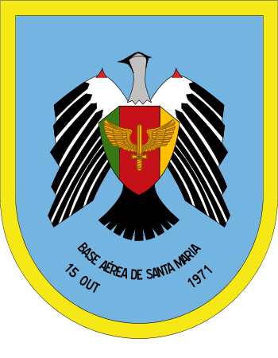
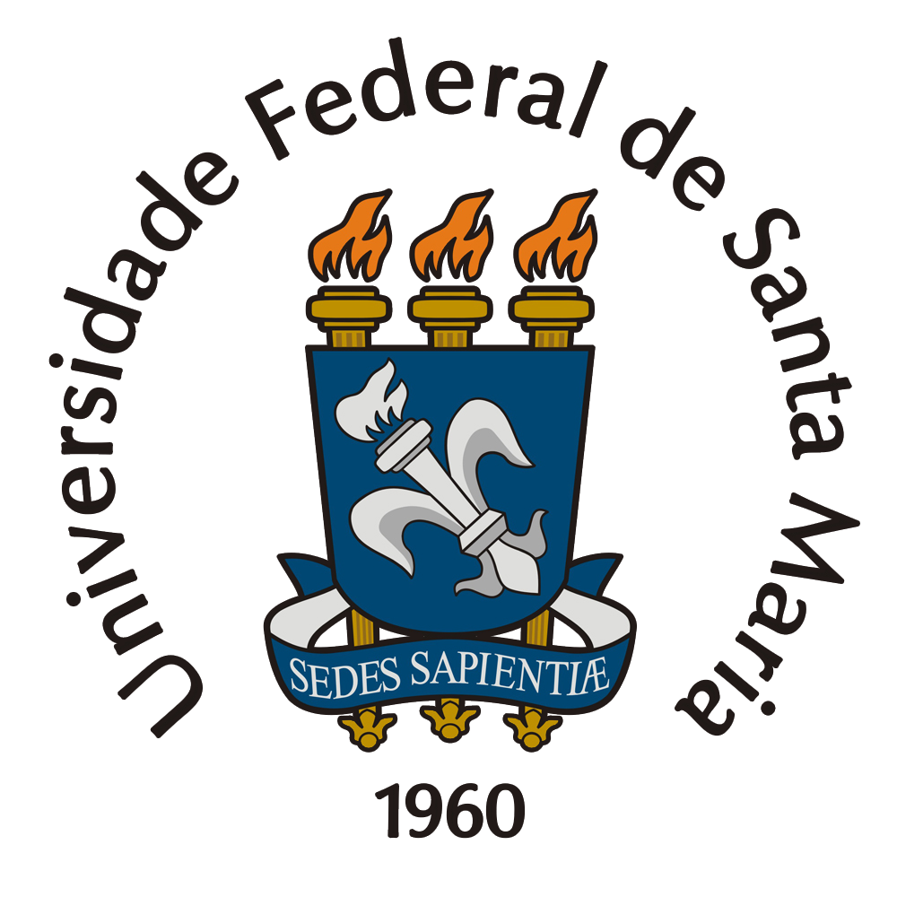
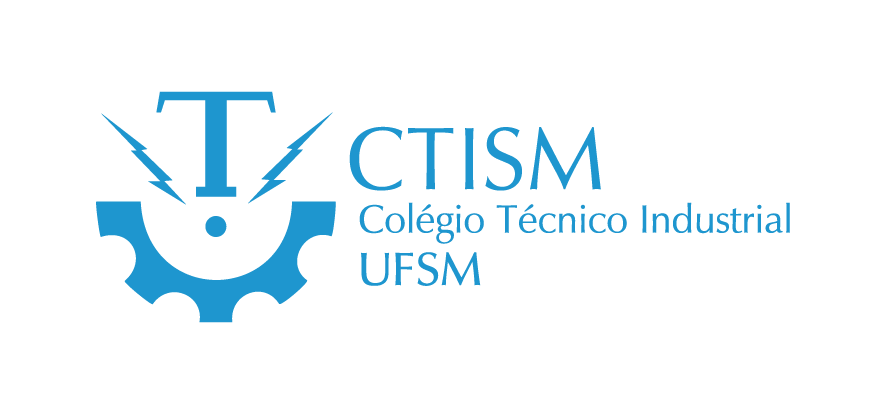

Sobre
Projetista II em Soluções de Iluminação Pública e Eficiência Energética na ENGIE (Nov/2024 - Presente). Atuo com projetos de iluminação pública, com foco em sustentabilidade, buscando otimizar o consumo e reduzir o impacto ambiental. Paralelamente, curso Ciências da Computação (Unisul), aprimorando minhas habilidades em programação (Python, C++, Java) e desenvolvimento web (HTML, CSS, JavaScript), visando uma futura transição de carreira para a área tecnológica.
Experiência prévia inclui atuação na Justiça Federal de Santa Catarina (até Set/2024) com Automação Industrial, gerenciando o controle predial através de sistemas embarcados e implementando melhorias no software Envision. Anteriormente, na Base Aérea de Santa Maria, realizei manutenção elétrica predial e de computadores, solucionando problemas de hardware e software. Meu interesse por tecnologias para cidades inteligentes teve início com um projeto de iniciação científica sobre Inteligência em Iluminação, com foco em transmissão de dados e criptografia. Possuo conhecimentos em redes de computadores e sistemas operacionais (Windows e Linux), buscando constantemente expandir minhas habilidades na área de tecnologia.
Experiência Profissional
Projetista II | Soluções em Iluminação Pública e Eficiência Energética

Engie Soluções - Florianópolis, SC
Novembro de 2024 - Atual
- Atuo como Projetista II na ENGIE, uma líder global em transição energética, focada em soluções para descarbonização e otimização de energia. Nossa missão é desenvolver projetos sustentáveis que reduzem custos e emissões de CO2, transformando o modo como cidades e empresas gerenciam e consomem energia.
Minhas principais responsabilidades incluem:
- Projetos Luminotécnicos: Elaboração de projetos de iluminação pública e elétrica que atendem às normas vigentes, oferecendo o melhor custo-benefício para a ENGIE e seus clientes. - Inovação e Sustentabilidade: Pesquisa e aplicação das melhores soluções de mercado para iluminações eficientes e sustentáveis, com constante atualização de práticas e tecnologia. - Suporte e Relacionamento: Assistência técnica e orientação às unidades operacionais e fornecedores para garantir o alinhamento e execução dos projetos de acordo com os padrões da ENGIE. - Gestão e Orçamento: Desenvolvimento de orçamentos, controle de medições e acompanhamento de cadastros e pontos luminosos, assegurando qualidade e precisão. - Liderança Técnica: Atuação como orientador e facilitador para projetistas e fornecedores, promovendo o desenvolvimento da equipe e a otimização de atividades. - Contribuo diretamente para a criação de soluções energéticas inteligentes que impactam positivamente os setores industrial, comercial e urbano, incluindo Iluminação Pública e Mobilidade Elétrica. A ENGIE e eu trabalhamos com um compromisso contínuo de construir uma sociedade mais sustentável e com menor pegada de carbono, sempre em parceria com gestores públicos, população e parceiros.
Técnico em Eletrotécnica
Grupo Setup - Florianópolis, SC
Março de 2024 - Setembro de 2024
- Realizo manutenção elétrica no Hospital Universitário Polydoro Ernani de São Thiago.
- Atuei na área de Automação Industrial, realizando a gestão e controle do prédio e implementando melhorias no software Envision.
- Experiência prática com sistemas de automação e gerenciamento de infraestrutura.
Estágio em Manutenção Predial e de Computadores
Base Aérea de Santa Maria - Santa Maria, RS
2023
- Adquiri experiência prática em manutenção de infraestrutura predial, incluindo sistemas elétricos e hidráulicos, e em equipamentos de informática.
Formação Acadêmica
Ciências da Computação

Universidade do Sul de Santa Catarina (UNISUL) - Florianópolis, SC
2024 - Cursando
Sistemas de Informação
Universidade Federal de Santa Maria (UFSM) - Santa Maria, RS
2022 - 2023 (Trancado)
Técnico em Eletrotécnica
Colégio Técnico Industrial de Santa Maria (CTISM) - Santa Maria, RS
2019 - 2021
Habilidades
Linguagens de Programação
Tecnologias e Ferramentas
Idiomas
Projetos e Pesquisa
Iniciação Científica - Inteligência em Iluminação
Projeto de pesquisa focado em sistemas de iluminação inteligentes, abordando transmissão de dados e criptografia.
Desenvolvimento de Software para Controle Predial
Implementação de melhorias no software Envision para gerenciamento de controle predial na Justiça Federal de Santa Catarina.